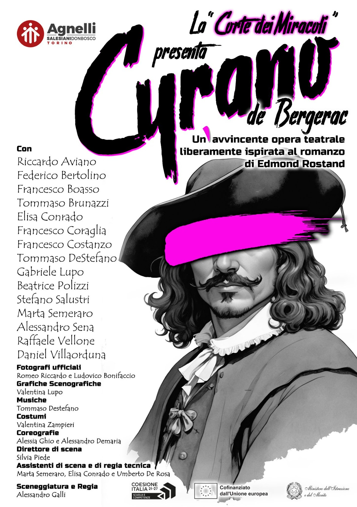

Le nostre opere
Il nostro primo spettacolo:
CYRANO DE BERGERAC
da Edmond Rostand

28 Maggio 2025 Teatro Agnelli
17 Ottobre 2025 Teatro Agnelli
28 Maggio 2025 Teatro Agnelli
17 Ottobre 2025 Teatro Agnelli